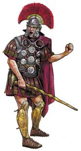

Легион в Риме состоял от 2 до 10 тыс. (в более поздние периоды 4,320) пехотинцев и нескольких сотен всадников. Каждый
легион имел свой номер и название. По сохранившимся письменным источникам идентифицировано примерно 50 различных
легионов, хотя считается, что их число в каждый исторический период не превышало двадцати восьми, но при необходимости
оно могло быть увеличено.
В VII—VI веке до н. э. римская армия, предположительно, представляла собой типичную этрусскую армию (так как римляне
находились под властью этрусков и армия включала в себя представителей римлян, этрусков (формировавших фалангу) и
латинян (сражавшихся, по привычке, в свободном строю). Этрусско-римская армия состояла из 40 центурий гоплитов (I
разряд), которые были вооружены по греческому образцу, 10 центурий копейщиков со средним вооружением (II разряд),
вооружённых по италийскому образцу копьём и мечом, а также имеющих шлем, поножи и италийский щит (скутум): 10 центурий
легковооружённых копейщиков (III разряд), у которых были копьё, меч, шлем и скутум; 10 центурий застрельщиков (IV
разряд), владевших копьём, дротиком и скутумом, и, наконец, 15 центурий пращников (V разряд). Размер центурий зависел от
того, какого размера армия требовалась. По такой же схеме строилась армия из ветеранов, которые составляли внутренний
гарнизон.
Легион Обязан Побеждать
